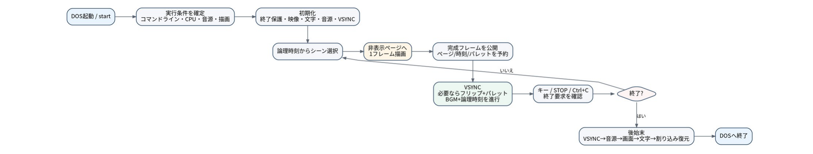
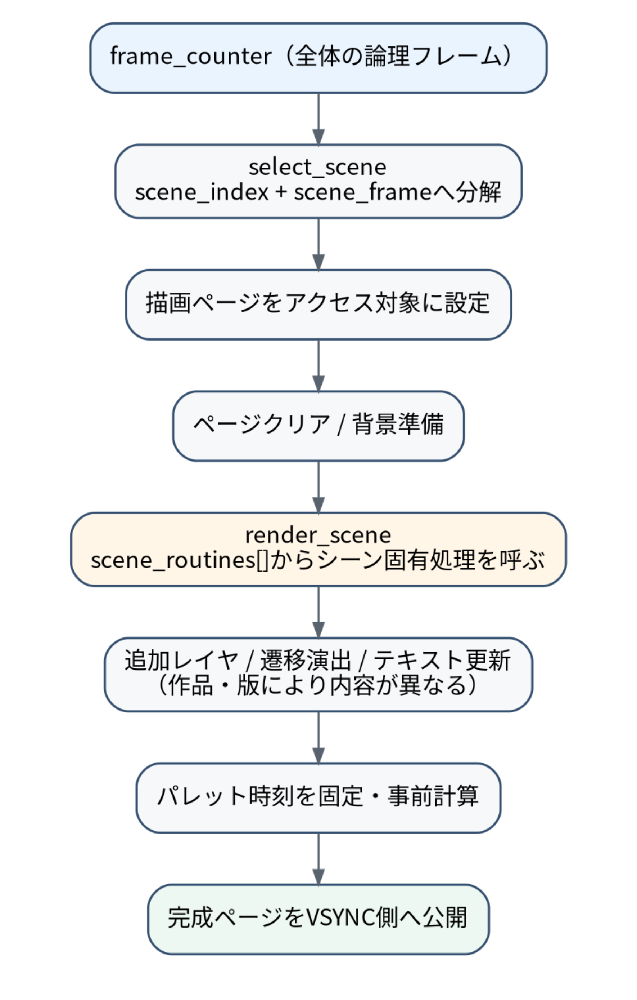
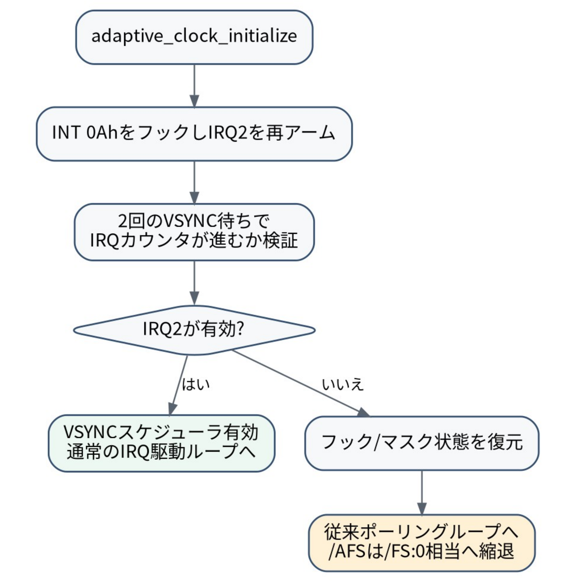
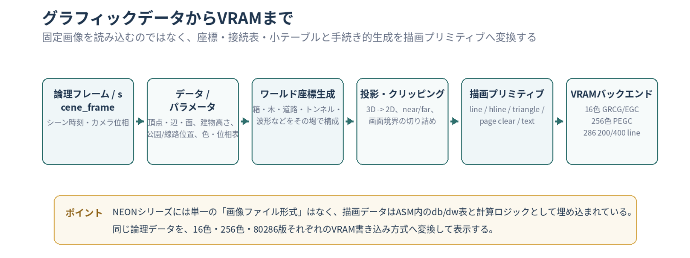

PC-98用グラフィック＆サウンドデモ NEON / NEON2 / NEON3 の、起動からデモループ、終了までの流れをソースコードから追った資料です。 通常版・256色版・80286版に共通する骨格を中心に、描画方式や世代ごとの差もまとめています。
このHTML版は「NEONシリーズ プログラム実行フロー解説」PDFをWeb向けに再構成したものです。 PDF版はこちら。
NEONシリーズの各版は、描画方式やシーン内容が異なっても、プログラム全体の寿命はほぼ同じ形です。 COMプログラムとして開始し、実行条件を確定し、画面・文字・音源・時間管理を初期化してからデモループへ入り、終了要求を検出したら逆順にハードウェア状態を戻してDOSへ帰ります。
プログラムを「描画」「音源」「VSYNC」のどれか一つとして見るより、複数のサブシステムが一つの論理フレーム番号を共有して進むデモプログラムとして見ると理解しやすくなります。

図版はPDF版「NEONシリーズ プログラム実行フロー解説」から切り出したものです。
| 段階 | 主な仕事 | 代表的な状態・データ |
|---|---|---|
| 起動 | DS/ESをプログラムセグメントへ揃え、タイトルを表示 | PSPのコマンドライン |
| 条件確定 | コマンドライン、CPU機能、音源、描画モードを決定 | sound_mode, video_backend, frame_skip, speed_percent |
| 初期化 | 終了保護、グラフィック、文字VRAM、音源、VSYNC時間管理を準備 | draw_page, sound_present, scheduler flags |
| フレーム生成 | 現在の時刻からシーンを決め、非表示ページへ描画 | scene_index, scene_frame, draw_page |
| 表示・時間進行 | 完成ページがあればVSYNCで表示し、モード規則に従ってBGMと論理時刻を進める | vsync_frame_ready, frame_counter, music_index |
| 入力確認 | 通常キー、STOP、Ctrl+Cの終了要求を確認 | break_requested |
| 終了 | IRQ、音源、画面、カーソル、割り込みベクタを復元 | 元INT 0Ah/06h/23h、PIC状態 |
用語: ここで「論理時刻」は frame_counter を中心としたデモ内部の時間、「実時間」はディスプレイのVSYNC周期を指します。/SPEED は論理時刻の進み方を変え、/AFS と /FS は描画と論理時刻の関係を決めます。
代表ソース: NEON NEONRUN.ASM / NEON2 neon2.asm / NEON3 NEON3256.ASM
start: COMプログラムの入口各版は org 100h のCOM形式です。CSをDS/ESへコピーして、文字列・テーブル・変数を同一セグメントで扱える状態にします。
start:
push cs
pop ds
push cs
pop es
cld
...
call parse_command_line
parse_command_line はPSPの80h番地にある長さと81h以降の文字列を読み、空白単位でトークン化します。
小文字は大文字へ変換され、parse_option_token が /AUTO、音源選択、/AFS、/FS、/SPEED、256色版のPEGCバックエンド指定などを判定します。
CPU依存の高速化を持つ版では cpu_detect_features を実行します。続いて sound_detect がOPNA/YM2608、YM2203/26K、OPL3を検査し、選択された構成を確定します。
音源が見つからなくても、グラフィックのみでデモを続行できます。
break_guard_install でSTOP(INT 06h)とCtrl+C(INT 23h)を安全な終了要求ハンドラへ差し替える。video_enter / video16_enter でグラフィックモードとページ構成を設定する。text_initialize で文字VRAMを準備する。sound_initialize でOPNA/OPL3と曲の先頭状態を作る。adaptive_clock_initialize でVSYNC IRQ2 / INT 0Ahスケジューラを導入し、実際に動作するか確認する。初期化後は .main_loop を繰り返します。通常はVSYNC IRQスケジューラを利用し、IRQが使えない場合だけlegacy経路へ移ります。
/AFS ではこの待ちを行わない。vsync_frame_ready が0になるまで待ち、前の完成フレームが表示済みであることを確認する。frame_counter をスナップショットし、非表示ページへ次のフレームを完成させる。vsync_queue_completed_frame で表示予定ページ、シーン時刻、パレットをVSYNC側へ公開する。
描画途中のページを表へ出すと、ティアリングや中間状態が見えます。そのためメイン側は裏ページを最後まで描き終えてから vsync_frame_ready=1 とし、VSYNC IRQは完成したページだけを表示します。
/AFS では重い描画中も実VSYNCに合わせて音楽・映像時刻が進み、次に描くフレームが追いつくことで自動スキップします。/FS:n では固定の論理フレーム進行へ音楽も合わせるため、描画が遅い場合はBGMも同じだけ遅くなります。
frame_counter を scene_index / scene_frame に分解する
デモ全体の時刻は frame_counter で持ちます。select_scene は全体フレーム番号を各シーンの長さで順に減算し、現在のシーン番号とシーン内相対時刻へ分解します。
| 作品 | 総論理フレーム | シーン数 | 選択方法 |
|---|---|---|---|
| NEON | 3072 | 5 | 比較チェーン（384 + 640×4） |
| NEON2 | 6144 | 12 | scene_length_table を順に走査 |
| NEON3 | 6144 | 9 | 長さテーブル + 一部シーン境界の状態管理 |
描画先は scene_routines のnear pointer表から選び、メインループは個々のシーン名を意識しません。

NEON2 256色版ではシーン確定→パレット位相同期→ページ選択→クリア→シーン→Plane固有レイヤ→遷移→粒子→テキストの順です。 NEON3は最終ロトズームでページ再利用の最適化があるため分岐が増えますが、通常区間の骨格は同じです。
初代NEONは5つの大きな章を比較的直接的に描き、NEON2は64小節に対応した12シーン、NEON3は持続するカメラ状態を持った9シーンの連続都市飛行になっています。
AFSでシーン先頭フレームが描かれない可能性があるため、カメラのrebaseなどは単純な scene_frame==0 だけに依存しない境界処理が必要です。
各版は draw_page をアクセスページとして選び、そのページをクリアして描画します。完成後にVSYNC側が表示ページへ切り替え、次の裏ページへ交代します。
PEGC 256色版はPlane / Packed / PackedFullなど複数の描画経路を持ちます。video_enter が実際に使う video_backend を決め、その後のシーン選択や時間管理はバックエンドから独立します。
IRQ駆動中は描画途中にもグローバル時刻が進む可能性があります。完成した絵と後から参照した現在時刻を混ぜると、映像よりパレットだけ先行します。
そのため完成時の scene_index / scene_frame を保存し、その時刻に対応するパレットをメイン側で準備してから公開します。IRQ内では準備済み値を反映するだけにし、重い補間や除算を避けます。
現行版はPC-98のmaster GDC VSYNC割り込み（IRQ2 / INT 0Ah）を表示切替の共通境界として使います。
ただしBGMと映像の時刻をどう進めるかは、/AFS と /FS:n で異なります。
adaptive_vsync_irq:
...
; 完成フレームがあれば表示
if (vsync_frame_ready) {
set_display_page(vsync_pending_page)
commit_prepared_palette()
draw_page ^= 1
vsync_frame_ready = 0
}
; AFS: 毎VSYNC
; FS : 完成フレーム/固定skipの論理slotだけ
if (/AFS || vsync_visual_tick_due) {
advance_audio_tick()
advance_visual_tick()
}
...| モード | 描画開始 | BGM / 論理時刻 | 重い場面 |
|---|---|---|---|
/AFS | 前フレームが表示済みならすぐ次を描く | 毎VSYNC、音楽と映像時刻を同時に進める | 未描画フレームを飛ばし、BGMテンポは実時間を維持 |
/FS:n | 完成表示後、指定skipを消費してから次を描く | 完成フレーム/固定skipの論理slotだけ両方進める | 自動skipせず、処理が遅ければBGMも同じだけ遅れる |
| IRQ不可 | 従来のポーリング経路 | advance_logical_tick で音楽+映像を同期更新 | AFSはlegacy測定または固定相当へ縮退 |
/SPEED は論理時刻の倍率
speed_percent は100分率の位相蓄積として扱います。100なら1回につき1論理tick、100未満では時々据え置き、100超では時々2回以上進みます。
音楽用 audio_speed_phase と映像用 speed_phase は同じ倍率を受けるため、片方だけ異なる速度で進まないようにしています。
sound_detect
OPNA/YM2608またはYM2203/26Kを調べ、必要に応じてOPL3を調べます。/AUTO、/OPNA、/26K、/OPL、/BOTH などの指定と組み合わせて最終構成を決めます。
sound_initialize存在するチップだけを初期化し、ミキサ設定と音量補正を反映します。曲のindex、section、dividerを先頭へ戻し、最初の音源レジスタ状態を作ってからメインループへ入ります。
sound_tick は論理tickの一部
曲データは MUSIC_DIVIDER ごとに1step進み、各チップへ必要なレジスタを書き込みます。NEON2/NEON3では6144論理フレームと64小節の構成が対応しています。
sound_stop終了時は全音停止とミキサ/音源状態の復元を行い、音が鳴りっぱなしのままDOSへ戻ることを防ぎます。
STOPはINT 06h、DOS Ctrl+CはINT 23hです。割り込みハンドラは break_requested=1 として戻るだけで、DOS、BIOS、VRAM、音源の復元を行いません。
メインループは終了フラグとDOS AH=06hの直接コンソール入力を確認し、どちらも .exit_demo へ合流します。
adaptive_clock_shutdown でVSYNC IRQとPIC状態を復元。sound_stop で発音停止・音源状態を復元。video_leave / video16_leave でグラフィック、ページ、PEGC/GRCG/EGC状態を復元。break_guard_restore でINT 06h / INT 23hを復元。終了保護のベクタ復元を画面・音源の復元より後にすることで、クリーンアップ途中にSTOP/Ctrl+Cが入っても割り込みコンテキストで中途半端な後始末を開始しないようにしています。
VSYNC IRQ2は環境や常駐ソフトによって既に利用されている可能性があります。そのため、スケジューラはベクタを設定しただけでは成功扱いにせず、実際にVSYNCカウンタが進むか確認します。

PICマスク状態と旧INT 0Ahベクタを保存します。IRQ2が元々マスクされていた場合だけ自前でアンマスクし、「自分が有効化したIRQ」であることを記録します。既存利用者がいる場合は旧ハンドラへのchainを考慮します。
初期化直後にVSYNCカウンタ差が0なら、IRQが実際には動作していないと判断して元に戻します。検証中はスケジューラ本体をrunningにしないため、確認用のVSYNCがBGM時間を消費しません。
legacy経路ではメイン側が wait_vsync、ページフリップ、パレット反映、advance_logical_tick を同期的に実行します。IRQが使えなくてもデモ自体は停止せず、従来方式へ縮退します。
| 項目 | 初代 NEON | NEON2 | NEON3 |
|---|---|---|---|
| 全体時間 | 3072 frames / 5 scenes | 6144 frames / 12 scenes | 6144 frames / 9 continuous scenes |
| シーン選択 | 比較チェーン | 長さテーブル | 長さテーブル + 一部境界状態管理 |
| 描画の性格 | 2D/3D + text、比較的直接的 | 多数の演出レイヤ、パターン、粒子 | 連続3D都市、持続カメラ、ロトズーム |
| 256色 | 別NEON256、PEGC系 | Plane/Packed系 + CPU機能活用 | Plane/Packed/PackedFull、都市パレット |
| 標準/16色/286 | NEONRUNは8色、286版あり | 16色GRCG/EGC + 286版 | 16色版 + 286版（200/400） |
| VSYNC/BGM | 現行版はIRQ駆動へ統一。AFSは実時間優先、FSは映像/BGM同期優先。 | ||
start で環境・オプション・検出を確定する。frame_counter をシーン時刻へ分解し、裏ページへ描画する。
NEONシリーズの実行時BGMは、S98やMIDIファイルを読み込む方式ではありません。COM内にアセンブルされた短い1byteイベント列を、sound_tick / OPNA / OPL3側のシーケンサが一定の論理間隔で読み、音源レジスタへ変換して演奏します。
配布用データとの違い: NEON3に同梱したS98はOPNA+OPL3のレジスタログ、MIDIは鑑賞・DAW用の編曲データです。どちらも実行時プレイヤーが読むファイルではありません。
基本トークンは3作品で共通です。REST=FFh は休符/キーオフ、HOLD=FEh は直前の発音を保持し、通常音符は NOTE(block, semi) = (block << 4) | semi の形で1byte化します。
上位4bitが音域(block)、下位4bitが半音番号です。
music_data:
db 54h,0FEh,0FFh,0FFh,5Bh,0FEh,...
; 1チャンネル分の全stepを並べ、その後に次チャンネルが続く
music_data は基本的にchannel-majorで、読み出し時に channel * MUSIC_STEPS + music_score_index の形で現在位置を求めます。
| 作品 / 曲名 | 内部スコア | 主な構成 | 論理時間 |
|---|---|---|---|
| NEON Pulse Cartography | 512 step × 12ch（32 bars） | OPNA: FM 0..5 + SSG 6..8。OPL3側も共通スコアを利用 | 6 logical frames / step = 3072 frames |
| NEON2 Signal Convergence | 1024 step × 12ch（64 bars） | OPNA: 0..5 FM + 6..8 SSG / OPL3: 0..9、10..11予約 | 6 logical frames / step = 6144 frames |
| NEON3 METROPOLITAN IGNITION | 1024 step × 9ch（64 bars）+ rhythm 1024 bytes | 9 tonal rolesをOPNA/OPL3で共有 + 独立rhythm mask | 6 logical frames / step = 6144 frames |
標準速度では MUSIC_DIVIDER=6 なので、6論理フレームごとに music_score_index が1進みます。
AFSでは論理時刻が実VSYNCへ追従し、FSでは映像の固定論理進行へBGMも合わせます。
NEON3は旋律9chとは別に rhythm_steps を1024byte持ち、各stepを1byteのbit maskとして扱います。
BD=01h、SD=02h、CYM=04h、HH=08h、TOM=10h、RIM=20hです。同じマスクをOPNA Rhythm側とOPL3 percussion側が読み、それぞれの音源向けレジスタへ変換します。
NEONシリーズには、一般的なゲームのような「画面1枚のビットマップ」や「スプライト画像集」を中心とする共通グラフィックファイル形式はありません。 画面の大部分は、少数の座標・辺・配置パラメータ・lookup tableを入力として、そのフレームの形状をCPUが生成してVRAMへ描く手続き型です。
固定画像ではなく生成規則: 同じモデル/シーン情報から16色、256色、286版の異なるVRAM方式へ出力できます。見た目を規定する中心は「ピクセル列」より「幾何データ + 時間関数 + 描画バックエンド」です。
scene_length_table:
dw 640,640,512,896,...
scene_routines:
dw scene_city_descent, scene_tower_canyon, ...
NEON2/NEON3では、シーン長を dw のフレーム数配列、処理先をnear pointer配列として持ちます。これは画像そのものではありませんが、「どの生成規則をいつ使うか」を決める最上位のグラフィックメタデータです。
初代NEONの八面体は、6頂点をsigned wordのx,y,z、8面を3つの頂点index + 面色、12辺を始点/終点indexのbyte pairとして保持します。姿勢や投影後座標は毎フレーム計算します。
| データ | 格納単位 | 意味 | 例 |
|---|---|---|---|
| 頂点 | dw x, y, z | 3Dモデルのローカル座標 | oct_vertices |
| 面 | db v0, v1, v2, color | 三角面の頂点参照 + 面色 | oct_faces |
| 辺 | db v0, v1 | wireframeの接続関係 | oct_edges, city_box_edges |
| 投影scratch | dw screen_x, screen_y, ... | そのフレームだけ使う計算結果 | oct_projected |
NEON3のビル等は8頂点を個別に保存せず、位置・幅・高さ・奥行きから8頂点を組み立てます。city_obj_skew_q8 でせん断し、flagsで中間bandや屋上antennaを追加します。辺の接続は共通の city_box_edges を再利用します。
| フィールド/表 | 型 | 役割 |
|---|---|---|
city_obj_x / y / z | dw | 箱のワールド座標 |
city_obj_w / h / d | dw | 幅・高さ・奥行き |
city_obj_skew_q8 | dw (Q8) | Z方向に応じたXせん断 |
city_obj_flags | db bit flags | 中間band / roof antenna |
city_box_edges | 12 × (db v0,v1) | 全box共通の辺接続 |
| height / jitter / park / rail配列 | 小さなdw table | 建物変化、木、線路等の安定配置 |

16色版はGRCG/EGC系、256色版はPEGC Plane/Packed/PackedFull、286版は16色GRCG系へ出力します。
286版NEON3は論理座標系を640×400に保ち、標準640×200モードだけ最終primitive側でYを1/2へ変換します。/400 では同じ論理データを400lineへそのまま出します。
sin_table、perspective reciprocal、tunnel scaleなどは、フレーム中の乗除算を減らすlookup tableです。
tunnel_current、oct_projected、city_box_projected などは毎フレーム上書きされるscratch bufferです。
ソースを読むときは「固定モデル/配置」「時間で変わるparameter」「計算結果scratch」を分けて考えると整理しやすくなります。
| 役割 | 初代NEON | NEON2 | NEON3 |
|---|---|---|---|
| プログラム入口/主ループ | NEONRUN.ASMNEON256.ASMNEON286.ASM | neon2_16.asmneon2.asmNEON2286.ASM | NEON3_16.ASMNEON3256.ASMNEON3286.ASM |
| コマンドライン | 本体内 or COMMAND256.INC | COMMAND16/256/286.INC | COMMAND3_16 / COMMAND256 / COMMAND3_286.INC |
| VSYNC/AFS | AFS*.INC | AFS16/256/286.INC | AFS3_16 / AFS256 / AFS3_286.INC |
| シーン選択 | 本体内 / SCENE256.INC | SCENE16/SCENE256.INC | SCENE3_256.INC + 3D scene source |
| フレーム生成 | 本体内 / FRAME_RENDER256.INC | FRAME_RENDER256.INC / 16色本体 | FRAME_RENDER3_256/16/286.INC |
| 映像 | VIDEO*.INC | VIDEO16_* / VIDEO256*.INC | VIDEO3_16/256/286.INC + Packed系 |
| 文字 | TEXT*.INC | TEXT16/256/286.INC | TEXT3_16 / TEXT256 / TEXT3_286.INC |
| 音源 | OPNA.INC + OPL3.INC | ||
| 安全終了 | BREAKGUARD.INC | ||
| BGMデータ | DATA.INC: music_data | MUSIC_R11_OPNA_OPL3.INC | MUSIC_URBAN_D8.INC + rhythm_steps |
| グラフィックデータ | DATA.INC: oct_vertices/faces/edges | SCENE*.INC + DATA*.INC の演出/lookup表 | SCENE3*.INC + DATA3.INC + CITY3D*.INC のbox/配置表 |
代表ラベルを追う場合は、次の流れを見ると全体制御がつながります。
start
-> parse_command_line
-> sound_detect / video_enter / text_initialize / sound_initialize
-> adaptive_clock_initialize
-> .main_loop
-> snapshot render_frame_counter
-> select_scene / render_scene / text_update
-> vsync_queue_completed_frame
<-> adaptive_vsync_irq
-> present completed page
-> /AFS: audio + visual every VSYNC
/FS : audio + visual only fixed logical slots
-> .exit_demo
-> adaptive_clock_shutdown -> sound_stop -> video_leave -> break_guard_restorestart から .exit_demo までを通読し、初期化順とループ骨格を把握する。AFS*.INC の adaptive_vsync_irq と vsync_queue_completed_frame を読み、描画側とVSYNC側の境界を理解する。advance_audio_tick / advance_visual_tick と OPNA.INC の sound_tick をつなげ、音楽と frame_counter の関係を見る。SCENE*.INC の select_scene と scene_routines を確認する。FRAME_RENDER*.INC でページクリア、scene描画、追加レイヤ、text_update の順を見る。VIDEO*.INC や各シーン実装へ入り、VRAM方式・3D・パレットなど版固有の詳細を見る。CONFIG*.INC の MUSIC_STEPS / MUSIC_DIVIDER と music_data を確認し、OPNA/OPL3側の music_score_index 計算へつなげる。SCENE*.INC → DATA*.INC の固定表 → projection/clip → VIDEO*.INC のprimitive描画の順に見る。まとめ: NEONシリーズは「論理時刻からシーンと内部BGMスコアを選び、幾何データ/パラメータから裏ページへ画面を生成し、VSYNCで完成結果だけを公開する」という構造で読むと全体が整理できます。BGMは1byte token列、グラフィックは座標・辺・配置表を中心とした手続き型です。